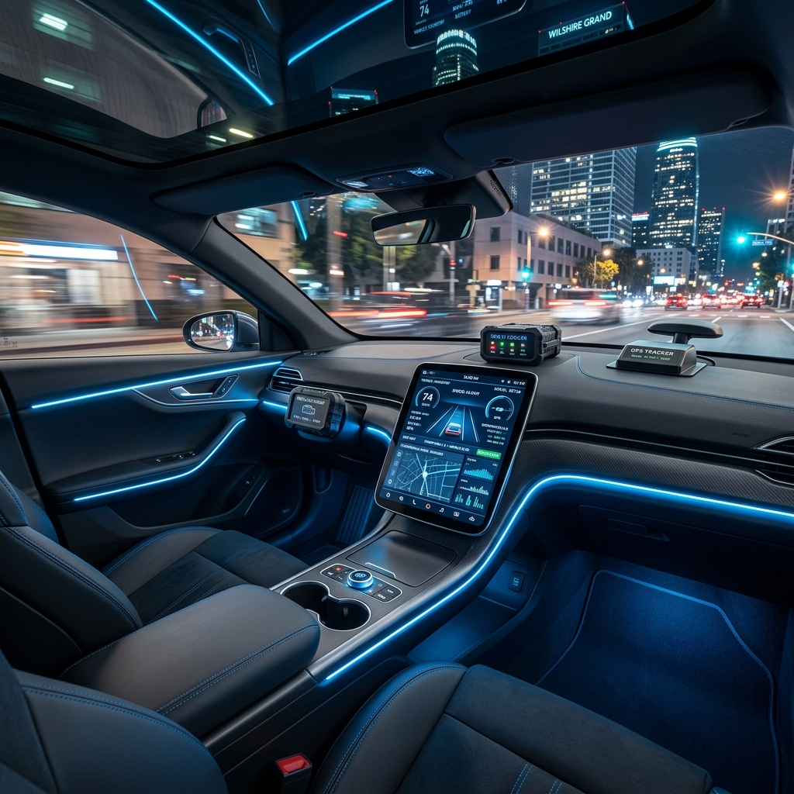
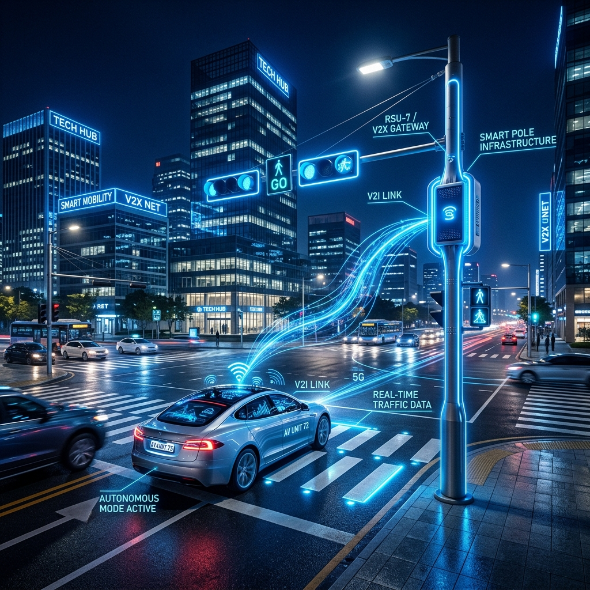
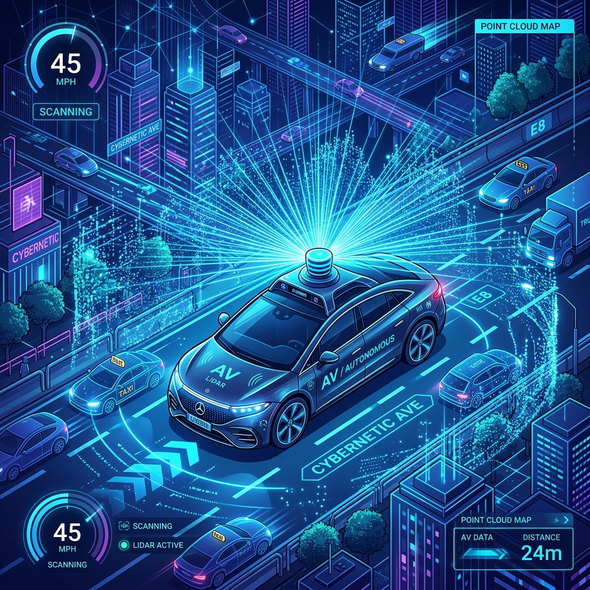

자율주행 데이터 수집 체계
자율주행 데이터 수집에 활용되는 주요 장비를 소개합니다. 각 장비는 차량 주행 상태, 도로 인프라 정보, 주변 객체 인식 정보를 수집하여 관제 시스템 및 데이터 서비스에 활용됩니다.

차량 내 데이터 수집 장비
자율주행 차량 내부에 장착된 장치를 통해 실시간 차량 상태 및 정밀 위치 정보를 수집합니다. OBU와 GPS 장비는 차량의 거동 데이터를 디지털화하여 관제센터로 송신하는 핵심 역할을 수행합니다.
- 차량 내부 통신망 정보 수집
- 실시간 데이터 로깅 및 전송
- 정밀 위치 정보 측정
- 주행 경로 추적 및 라벨링

도로 인프라 연계 장비
도로 및 교차로에 설치된 지능형 인프라 장비를 통해 차량-인프라 간 통신(V2I) 정보를 교환합니다.
- V2X 통신 인터페이스
- 인프라 데이터 통합 송수신

고정밀 환경 인식 센서
차량 외부와 주변 환경을 인지하기 위한 시각 및 거리 측정 센서 그룹입니다. LiDAR와 Radar 등은 복합 주행 환경에서 객체와의 거리를 정밀하게 산출하여 데이터의 가치를 증명합니다.
- 3D 포인트 클라우드 수집
- 객체 위치 및 거리 정밀 측정
- 주행 영상 및 시각 데이터
- 신호 및 표지판 인식 정보
장비별 수집 데이터 항목
차량 장비
인프라 장비
센서 장비
이와 같은 장비를 통해 수집된 데이터는 구미시 자율주행 관제센터의 관제 시스템 운영과 데이터 서비스 제공,
기업 지원 및 자율주행 기술 검증에 핵심적인 자원으로 활용됩니다.